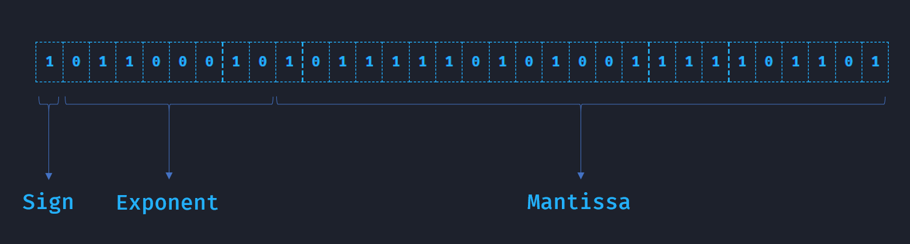

Numeros flotantes
Como muy seguramente se sabe, las computadoras atomicamente operan con nada mas que numeros, por ello los lenguajes de programacion nos brindan un conjunto de tipos de dato los cuales son de distintos tamaños y se encuentran dentro de un rango de posibles valores, como en el caso de algunos que soporta C++ podrian ser:
| Tipo | Tamaño | Rango de valores |
|---|---|---|
| boolean | 1 byte | enteros de 0 a 1 |
| char (o byte) con signo | 1 byte | enteros de -128 a 127 |
| char (o byte) sin signo | 1 byte | enteros de 0 a 255 |
| short con signo | 2 byte | enteros de -32,768 a 32,767 |
| short sin signo | 2 byte | enteros de 0 a 65,535 |
| long con signo | 4 byte | enteros de -2,147,483,648 a 2,147,483,647 |
| long sin signo | 4 byte | enteros de 0 a 4,294,967,295 |
Apesar de que los rangos mostrados anteriormente pueden llegar a ser muy grandes, hay veces en las que al desarrollar nuestros programas necesitamos de un poco mas de precision, como es el caso de los programas encargados de procesar datos geometricos (posiciones en el espacio, por ejemplo) para producir graficos por computadora, para estos datos se suelen usar un tipo de numeros reales denominados flotantes, los cuales son un poco mas complicados en su compocision, siendo asi mas interesantes tambien 😉
En cuestion de tamaño un dato flotante consta de 4 bytes (o 32 bits), lo que significa que podriamos tener como maximo 2³² diferentes posibles valores.
Aunque esto hace que nos planteemos la pregunta, ¿Como podriamos usar 2³² posibles valores para abarcar tantos numeros reales posibles? Y como entre el 0 y el 1 hay un infinito de numeros, debemos tener en mente poder usar numeros muy pequeños, asi como numeros muy grandes.
La respuesta puede ser expresada con la siguiente ecuacion:
Donde los 32 bits estan sub-divididos en 3 partes, un bit de signo, 8 bits para un numero exponente y 23 bits para un numero mantissa:
